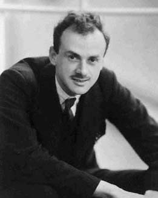

|
Planning a trip to Sicily? Then,
make sure you won't be feeding the Mafia!

|
|
|
If you have a scientific interest in the physics of the
radio, you should browse this site as an e-book!
|
|
|
|
My technical-scientific work is dedicated to the memory of
Nikola Tesla,
Antonio Meucci
and to all living creatures who are victims of oppression and injustice.
Francesco Errante
|
|
Injustice is indivisible. An injustice
anywhere is a threat to justice everywhere!
Martin Luther King Jr.

|
|
Autobiographical notes by the author.
I am an experimental physicist and radio-electronics engineer. I first encountered radio–electric
transceivers at the age of eight. For over a quarter of a century, I have been engaged
in a self–funded scientific research program aimed at investigating the physics of
Hertzian radiation and radio-electric phenomena. Having moved to Great Britain toward
the end of 1988, I returned to Italy in March 1999 due to a
misfortune that has befallen
on my family.
Although not without difficulty, I continued my research in Italy, where,
instead of finding support and assistance, I found the institutions associated with the
maintenance of Italy's technological rachitism, especially in its depressed areas. I can't help but
recall my father's words. Having served for over twenty years as an inspector general
(with full office and duties) of the Agricultural Development Agency (ESA), at the regional headquarters in
Palermo, he referred to it as the "Agricultural Rachitism Agency."
Having said that, I, Francesco Errante, the son of the late Vincenzo Errante
(born in 1920, a Partisan) and Margherita Caminita, born in Palermo on August the 18th, 1969,
wish to disclose to the international intellectual community, scholars and students, technicians
and radio amateurs, and all those who may benefit from this website (www.Radiondistics.com),
my discoveries in the field of radio wave physics and the scientific instruments I have designed and developed
for their experimental verification, as well as my products for ready-to-use application in the
radio communications.
|
Visit www.uibm.gov.it and enter
Francesco Errante in the search box to see all patents of mine, or
verify it directly from the European Patent Office
archive HERE !
|
Many believe that research isn't done
in Italy, but the truth is that a lot of research is done in Italy...
quite a lot of research is being done, especially on how to steal money
from the State, the European Union, and even from private citizens,
with pretext of scientific research.
|
|
Free Science in free State
by Margherita Hack,
Edizione Rizzoli.
Not only are we among the last in Europe in scientific subjects, but when
we manage to train a true genius, we usually hand him a suitcase and send him abroad to do
gooding. Why doesn't research in Italy really want to work? For two reasons,
both deeply rooted in national history and customs. On the one hand, we suffer from a chronic and
inexplicable fear of science and its potential, and from the Galileo case to the battle against
preimplantation embryo analysis, much of the blame lies with the Church and its habit of
dictating the law in a country that professes to be secular. On the other hand, there's the state, which from
right to left cuts university funding, wastes scarce resources, and messes up academic
careers without, however, managing to wrest them from the "barons." Thus, while the importance of innovation for the country's growth is extolled everywhere,
in reality, those who should be producing it are hindered by every means: cumbersome competitions, lifelong precarious employment, starvation wages, and, why not,
conscientious objection. Stories of ordinary contradictions in a failing system.
Margherita Hack dedicates this book to analyzing the conditions of research that no longer has either
State or Church to rely on. She examines the reforms that have taken place under four
governments, denounces the recurring errors and too many inconsistencies, highlights the positive
examples encountered throughout her career, and finally offers some ideas.
|
|

Paul Adrien Maurice Dirac, Nobel prize in physics, year 1933
|
"I don't understand why we keep talking about religion" Paul Dirac once said.
If we are honest – and as scientists,
we must be – we must admit that
any religion is a mixture of false
assertions, devoid of any basis in reality. The very idea
of God is a product of man's imagination. I fully understand that primitive
man, more exposed to the overwhelming forces of
nature, personified these forces, driven
by fear. But today, when we know so many
natural phenomena, we no longer need
these solutions. I assure you that I cannot
see how postulating the existence of an omnipotent God can be of any use to us. What I
understand is that such hypotheses lead to nothing but
sterile questions, such as why God allows
so much misery and injustice, the exploitation
of the poor by the rich, and all the other horrors
or evils that He could have easily
avoided? If religion is still passed down,
we know It';s very well that this happens, not because
religion convinces us, but to keep the
subaltern classes calm. It is easier to dominate fearful
peoples than dissatisfied ones who
protest; and it is also easier to exploit them. It has already
been said: religion is like a kind of opium: people are lulled by visionary dreams,
forgetting real injustices and exploitation.
Hence the alliance between the two great political forces
of the State and the Church. Both find
it convenient the illusion that a good God rewards�
if not in this world, then in the next�those who
have not risen up against injustice but who
have submitted docilely and perhaps gratefully to the duties imposed on them. And
this is why honestly asserting
that God is only a figment of the human
imagination is considered the worst of all
mortal sins."
|
Italian university
to join the race for actively damaging the image of the scientific research
in Italy!
Overwhelmingly enthusiastic boffins
managed to make a world-wide
unvoluntary hoax announcement.
Naïve theoreticians from the Department of physics and astronomy of the University of
Padua and the Swedish Institute of Space Physics have covered themselves with ridicule after claiming
they have found a way to force photons to follow an helicoidal trajectory in the free space, in a
circular-vortex-like fashion, by simply getting a conventionally generated plain wavefront to bounce back off
a portion of a purposefully distorted paraboloidal reflector (pictured below).


They have also claimed that by doing so, a number of radio carrier
signals having identical frequency could travel on the same path and direction by means of circular
vortex-like trajectory differing from each other only by the phase of their vortex, each carrying a different
set of informations, thus obtaining more channels in the same frequency.
According to the informations I gathered, they have conducted some seriously ill-conceived and
ill-deviced experiments with the assistance of a few italian radio amateurs, instead of hiring proper
microwave engineers.
Owing to their lack of competence and expertise, the italo-swedish Team has blatantly failed to
comprehend the results and its own mistakes. Needless to say: their "experiment" on the venetian lagoon
turned out to be a fiasco!
|
|
|
|
|
|
All the concepts, methods, designs and devices presented on this
web site
are the original novelty works of FRANCESCO ERRANTE.
Patents & Copyright © 1985- of FRANCESCO ERRANTE.
Material is governed by the Copyright, Designs and Patent Act.
No reproduction, in whole or in part, without written permission.
Copies of these documents made by electronic or mechanical means, including information storage and retrieval systems, may only be employed for personal use.
All rights reserved.
|
All rights reserved. Copyright © 1985- Francesco Errante
www.Radiondistics.com - Tel.(+39) 339.180.1313
|
|